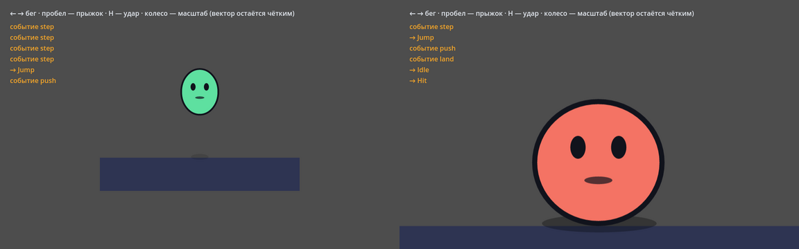
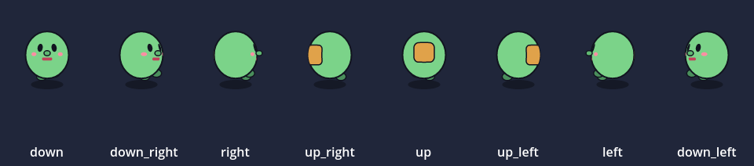

Motif в игре: узел MotifSprite
Аддон Motif для Godot 4 добавляет узел MotifSprite. Он читает файл .msc и играет его прямо в игре, без запекания в спрайты. Сцену двигает то же ядро, что и редактор Motif, поэтому кости, мягкие тела, морфинг, 3D-повороты, машина состояний и события анимаций ведут себя в игре так же. Кадр рисуется под размер узла на экране, так что при приближении камеры капля остаётся чёткой.

godot-apps/hero в Godot 4.3: стрелки дают вход speed, пробел — триггер jump. Справа камера приближена колесом, капля получила hurt.Как это устроено
MotifSprite — это GDExtension: расширение Godot, написанное на Rust. Godot умеет загружать такие расширения как обычную библиотеку (на Windows это motif_godot.dll). В эту библиотеку собрано то же ядро Motif, что работает в редакторе. Поэтому в игре нет «второго Motif», который надо догонять по возможностям: что сцена умеет в редакторе, то она умеет и в игре.
- Когда узел появляется в сцене, библиотека читает файл
.mscтем же разборщиком скрипта, что и редактор. - Каждый кадр Godot вызывает у узла
_process(delta). Ядро сдвигает время наdelta: машина состояний проверяет входы и переходы, анимации ставят позу, кости и мягкие тела делают свой шаг. События, которые время прошло, уходят в игру сигналомevent. - Поза уходит на видеокарту: контуры режутся на треугольники, а края получают тонкую кайму в один пиксель экрана — она сглаживает их. Godot рисует эти треугольники сам при любом приближении камеры, поэтому края остаются чёткими. Фигура, которая только двигается, поворачивается или масштабируется, не режется заново: её треугольники просто переносятся. Фигура внутри сетки-деформера (
deform) тоже режется один раз, как она лежит до сетки, а каждый кадр её точки сгибает сама сетка, как в Live2D. Обводка гнётся вдоль своей линии и сохраняет толщину, так что картинка та же, что на процессоре. То, чего треугольники пока не умеют (размытие, тени и свечение, маски групп, градиенты, режимы наложения), рисуется на процессоре маленькой картинкой только под этой деталью. Сgpuвыключенным весь кадр рисуется на процессоре картинкой размера узла на экране — так же, как в Motif и вget_image. Кадры всех узлов рисуются одновременно, на всех ядрах процессора: узел начинает свой кадр, пока Godot обновляет игру, и забирает готовый, когда приходит время рисовать. Если поза не изменилась (персонаж замер, клип кончился, игра на паузе), кадр не рисуется заново. - Картинка становится текстурой узла, и Godot выводит её как обычный спрайт.
Почему не на GDScript. Аддон на GDScript не нужно собирать, но тогда всё, что умеет Motif (фигуры, кривые, кости, мягкие тела, 3D-повороты, машину), пришлось бы написать заново на другом языке. Сложное пришлось бы урезать, а две реализации со временем начали бы расходиться. GDExtension берёт готовое ядро, и оно на скомпилированном Rust ещё и заметно быстрее. Цена — библиотека под каждую систему: для Windows она лежит в сборке Motif, для Linux и macOS её собирает cargo build --release -p motif-godot.
Что попадает в готовую игру: папка addons/motif с библиотекой и файлы .msc со шрифтами. Шрифты и сцены библиотека читает через Godot, поэтому они находятся и внутри упакованной игры.
Без Godot: крейт motif-runtime
Проигрыватель сцены живёт в отдельном крейте motif-runtime, без Godot и без окна. MotifSprite построен на нём, и так же его подключает конструктор игр Forge или любая другая игра на Rust: крейты motif-core, motif-script, motif-render и motif-runtime как библиотеки. Редактор и аддон Godot для этого не нужны.
let mut hero = motif_runtime::Player::load(&src, Some(dir), "", "", "")?;
hero.set("speed", 1.0)?;
hero.fire("jump")?;
let step = hero.advance(dt); // события (имя и время внутри dt) и новое состояние
let image = hero.render(2.0, false); // кадр картинкой tiny-skia в 2× размере холстаВремя только от игры. Проигрыватель не читает часы системы: он двигается ровно на тот dt, который ему дали. Остальное то же, что у узла: set/get/inputs, fire, jump, restart, state, стороны (sides, set_side, face_toward), мышь для listen (pointer) и frame() — снимок позы, который можно рисовать в другом потоке. Треугольники для видеокарты дают Frame::pieces с включённой возможностью крейта mesh.
Одинаково при любой частоте кадров. Машина и физика (пружины, верёвки, мягкие тела, частицы) двигаются целыми шагами по 1/60 секунды (motif_runtime::TICK, те же кадры, которыми Motif считает физику при выгрузке). Переходы машины срабатывают и физика делает шаг только в конце целого шага, поэтому одна и та же игровая секунда даёт одну и ту же игру при 30, 60 и 144 кадрах, а одна и та же последовательность dt — в точности одно и то же состояние. Между шагами поза показывается досчитанной до текущего времени, так что картинка двигается каждый кадр. Вход или триггер, выставленный игрой, машина видит в конце текущего шага (не позже чем через 1/60 с).
- События по порядку.
advance(dt)возвращает все события, пройденные заdt, по порядку и с точным временем от начала шага (Event { name, time },timeот 0 доdt). Долгий кадр не теряет события: секунда петли с событием каждые 0,2 с вернёт их все. Повторно событие не приходит. - Пауза.
advance(0)(и отрицательное время) ничего не меняет: ни позу, ни время, ни ждущий триггер. Замедление времени — просто меньшийdt. - Сид.
set_seed(n)задаёт случайность сцены: разлёт частиц, капли жидкости, дрожание «рисованных» линий. Две копии одного персонажа с разными сидами отличаются, повтор с тем же сидом совпадает. Сид 0 — сцена как в Motif. - Сохранение игры.
save_state()отдаёт всё, что играет дальше: состояние машины и его время, входы и ждущие триггеры, мышь, пружины, верёвки, мягкие тела, частицы и капли, сторону и сид (PlayerState, его можно сериализовать serde или взять байтыto_bytes()).load_state(&state)в проигрывателе той же сцены продолжает ровно с того места: те жеadvanceдальше дают те же позы и события, что и без сохранения. Сама сцена в состояние не входит. Состояние другой машины (другое имя, число состояний или входов) или другого формата (STATE_FORMAT) не принимается, и проигрыватель остаётся как был.
let saved = hero.save_state().to_bytes(); // в файл сохранения игры
// … позже, после загрузки сцены:
hero.load_state(&PlayerState::from_bytes(&saved)?)?;Когда что брать
| MotifSprite (вектор в игре) | «Выгрузить в Godot…» (запекание) | |
|---|---|---|
| Чёткость | Любой масштаб, камера может приближаться | Размер, с которым запекли |
| Физика, мягкие тела | Живые: каждый раз чуть по-разному | Записанный один раз прогон |
| Цена | Фигуры рисует видеокарта, но контуры готовит процессор: десятки крупных персонажей на экране пока заметны (см. «Скорость») | Почти бесплатно: готовые спрайты |
| Пиксель-арт через PixaTool | Нет | Да |
| Правка | Сохранили .msc в Motif — игра покажет новое при следующем запуске сцены | Выгрузить ещё раз |
Их можно смешивать: главный герой и интерфейс — вектором, толпа и частицы — запечёнными спрайтами.
Как поставить
Из Motif одной кнопкой. Сохраните сцену, откройте «Экспорт → Motif в игре (MotifSprite) → Поставить в проект Godot…» и выберите папку внутри проекта Godot (например characters). Motif положит туда:
- аддон в
res://addons/motif— или обновит его, если он уже есть; - сцену
.mscи шрифты, на которые она ссылается, по тем же путям; ИМЯ.tscnс готовым узлом MotifSprite. Если такая сцена уже есть, её Motif не трогает;*.msc,*.ttfи*.otfв фильтры экспорта, если в проекте уже есть пресеты экспорта.
Потом каждое Ctrl+S в Motif копирует сцену в проект снова, а Godot покажет новую версию при следующем запуске сцены. «Отвязать» под кнопкой это выключает.
Установка — всё или ничего. Сначала Motif проверяет всё, что может помешать, и только потом меняет проект:
- проект должен быть Godot 4.3 или новее: для проекта Godot 3 или 4.2 Motif скажет об этом и ничего не тронет;
- шрифты сцены должны лежать рядом с ней, иначе игра их не найдёт;
- в аддоне должна быть библиотека для этой системы, иначе Motif предупредит.
Затем новые файлы пишутся рядом со старыми скрытыми копиями и встают на место разом. Если что-то сорвалось посреди замены (чаще всего открытый Godot держит motif_godot.dll), Motif возвращает всё как было: прежний аддон, прежнюю сцену и шрифты. Тогда закройте Godot и поставьте ещё раз. Ваши файлы проекта и уже существующая ИМЯ.tscn с правками не трогаются никогда.
После установки Motif пишет, что изменилось: сцена, сколько шрифтов обновлено, поставлен или обновлён аддон и с какой сборки на какую, какие пресеты экспорта получили фильтр. В редакторе это строка состояния, в командной строке — тот же список.
Сборка Motif записана в addons/motif/version.txt. Если библиотека и папка аддона оказались из разных сборок (например, аддон скопирован руками не целиком), MotifSprite один раз предупредит об этом в «Выводе» Godot.
То же из командной строки: motif.exe runtime hero.msc -o C:\game\characters.
Руками:
- Скопируйте папку
godot-addon/addons/motifиз папки Motif в свой проект Godot, чтобы получилосьres://addons/motif. В ней файлmotif.gdextension, значок и библиотекаbin/motif_godot.dll. Включать аддон в настройках проекта не нужно: Godot подхватывает расширение сам. - Положите сцену
.mscв проект, напримерres://hero.msc. Шрифты, на которые она ссылается (font "fonts/Inter-Medium.ttf"), кладите рядом с ней по тем же путям. - Добавьте узел MotifSprite и выберите файл в свойстве Scene. Сцена сразу играет и в редакторе Godot.
Нужен Godot 4.3 или новее. Аддон собран для Windows x64, а для Linux и macOS его собирает godot-apps/build.sh из репозитория.
Экспорт игры. Файлы .msc Godot не считает ресурсами. Кнопка Motif дописывает их в фильтры сама, но только в пресеты, которые уже есть. Если пресет экспорта создан позже, в окне «Проект → Экспорт» на вкладке «Ресурсы» допишите *.msc в поле «Фильтры для экспорта не-ресурсных файлов» (и *.ttf, если сцена берёт шрифты из файлов).
Свойства
| Свойство | Что делает |
|---|---|
scene | Файл .msc. |
board | Холст файла по имени или номеру с 1. Пусто — первый. |
machine | Машина состояний, которая играет сцену. Пусто — первая машина холста. |
animation | Одна анимация вместо машины. Повторяющаяся крутится по кругу. |
playing / speed | Идёт ли время и как быстро (1 — как в Motif). |
centered | Холст рисуется вокруг позиции узла (иначе от левого верхнего угла). |
resolution | Сколько точек рисовать на точку экрана: больше 1 — глаже края, меньше 1 — быстрее. |
background | Рисовать цвет фона холста (bg) под сценой. |
gpu | Рисовать на видеокарте (включено). Выключенное — кадр целиком на процессоре: точная копия Motif до пикселя, но медленнее. На видеокарте отличаются только сглаженные края, в пределах полупикселя. |
pointer | Передавать мышь строкам listen машины: наведение, нажатие, клик и положение указателя. Так кнопка из Motif реагирует на мышь сама. |
facing | Куда смотрит персонаж в сцене со строкой directions: любой вектор, показывается ближайшая сторона. См. «Стороны». |
Из кода
@onready var hero = $Hero
func _ready():
hero.event.connect(func(name): if name == "step": $Step.play())
hero.state_changed.connect(func(state): print("теперь ", state))
func _process(_delta):
hero.set_input("speed", absf(Input.get_axis("ui_left", "ui_right")))
if Input.is_action_just_pressed("ui_accept"):
hero.fire("jump")| Метод / сигнал | Что делает |
|---|---|
set_input(имя, значение) | Вход машины: число или true/false для флага. |
fire(имя) | Срабатывает триггер. |
get_input(имя) / get_inputs() | Значение входа; все входы машины по именам. |
get_state() | Состояние, в котором машина сейчас (или играющая анимация). |
jump_to(состояние) | Сразу перейти в состояние, без смешивания. |
restart() | С начального состояния, входы по умолчанию. |
reload() | Перечитать файл сцены. |
get_size() | Размер холста в точках. |
get_image(масштаб) | Текущий кадр картинкой Image: для скриншота, иконки или своей текстуры. |
advance(секунды) | Сдвинуть время сразу на столько секунд, даже на паузе, с событиями и сменой состояний: для покадрового шага или игры, которая ведёт своё время. Машина и физика идут целыми шагами по 1/60 с, поэтому результат не зависит от частоты кадров (см. «Одинаково при любой частоте кадров»). |
get_time() / get_current_animation() | Сколько секунд проиграла анимация состояния и какая анимация играет сейчас (со стороны: Walk_up, пока состояние играет Walk). |
side / get_sides() / is_flipped() | Сторона по имени, все стороны сцены и показана ли сторона отражённой. См. «Стороны». |
сигнал event(имя) | Событие анимации (строка «События» на таймлайне): шаг, удар, момент для звука. |
сигнал state_changed(состояние) | Машина перешла в другое состояние. |
сигнал side_changed(сторона) | Персонаж повернулся на другую сторону. |
Если файла нет или в нём ошибка, узел показывает предупреждение в дереве сцены (значок ⚠) и пишет причину в «Вывод», а игра не падает.
Стороны
Если в сцене есть строка directions (персонаж с 4 или 8 сторон), MotifSprite поворачивает его прямо в игре. API тот же, что у запечённого экспорта: передайте направление движения в facing, и узел покажет ближайшую сторону.
func _physics_process(delta):
var dir := Input.get_vector("ui_left", "ui_right", "ui_up", "ui_down")
if dir != Vector2.ZERO:
$Walker.facing = dir # ближайшая из 8 сторон
$Walker.set_input("speed", dir.length())
examples/directions.msc в Godot 4.3: восемь узлов MotifSprite с разным facing играют машину Walker. Левые стороны отражены при рисовании.Что происходит при повороте:
- Своя анимация стороны. Состояние машины играет
Walk, а со спины вместо неёWalk_up, если она есть в сцене. Состояние при этом не меняется:get_state()остаётсяWalk, аget_current_animation()показываетWalk_up. - Шаг не сбивается. Время анимации сохраняется: ходьба продолжается с того же места, на паузе персонаж остаётся на паузе.
- Поворот не шлёт событий. События приходят только когда идёт время, поэтому поворот посреди шага не даст лишнего
step. - Отражение. С
mirrorлевые стороны — это правые, отражённые при рисовании. Узел при этом не переворачивается (scaleостаётся прежним), поэтому дочерние узлы, оружие и надписи не отражаются. Мышь для строкlistenотражается вместе с картинкой.
Сторону можно задать и по имени: $Walker.side = "up_right", тогда facing подстроится сам и сохранится вместе со сценой. Все имена дают get_sides(), а сигнал side_changed приходит при каждом повороте.
То, что редактор и игра поворачивают персонажа одинаково, проверяет общий сценарий godot-addon/test/sides.txt: шаги «пауза, ходьба, поворот с середины шага, отражённая сторона». Тест ядра и тест в настоящем Godot 4.3 пишут по нему журнал (состояние, анимация, сторона, время, события) и сверяют с одним файлом sides.expected.
Скорость
По умолчанию узел рисует на видеокарте (gpu, см. «Как это устроено»). Кадры всех узлов готовятся одновременно на всех ядрах процессора: первый — основным потоком Godot, остальные — потоками Motif. Если поза не изменилась (персонаж замер, клип кончился, playing выключен), кадр не готовится заново.
Замер на Linux, 4 ядра, Godot 4.3 без экрана, release-сборка, масштаб 1. Работа кадра — время процессора от начала обновления до конца рисования узлов, среднее по 300 кадрам. Работа самой видеокарты в этот замер не входит: на ПК её покажет профайлер Godot.
| Сцена (холст) | Персонажей | Процессор: прежде | Процессор на всех ядрах | Видеокарта |
|---|---|---|---|---|
directions (240×240) | 1 | 2,0 мс | 1,8 мс | 0,8 мс |
| 20 | 23 мс | 9 мс | 5,5 мс | |
character-platformer (320×384) | 1 | 5,5 мс | 4,8 мс | 1,3 мс |
| 20 | 87 мс | 31 мс | 13 мс | |
character-anime (640×720) | 1 | 8,9 мс | 9,1 мс | 4,4 мс |
| 20 | 209 мс | 74 мс | 42 мс |
Цель плана — 1 персонаж до 1 мс и 20 персонажей до четверти кадра 60 fps (4,2 мс). Пока она не достигнута. Сетки-деформеры уже не режут фигуры заново: у аниме-лица подготовка треугольников стала в полтора раза дешевле (4,1 → 2,7 мс на персонажа без Godot). Заново пока режутся фигуры, которые гнут кости или морфинг. У двадцати персонажей теперь дольше всего считается сама поза (клип, параметры, сетки): это около 1,5 мс на персонажа, и пока это делает только основной поток Godot. Следующие шаги — считать позу на всех ядрах, гнуть кости так же, как сетки, затем градиенты, маски и размытие на видеокарте. Что помогает уже сейчас:
- Толпу и повторяющихся врагов запекать («Выгрузить в Godot…»), вектором оставить героя и интерфейс.
- Без
gpu: resolution меньше 1 даёт меньше точек. 0,5 рисует вчетверо меньше точек, а у мелких на экране персонажей разницы почти не видно. Холст по размеру персонажа тоже помогает: пустые поля вокруг рисуются.
Как замерить на своём ПК: godot-addon/test/bench/run.sh ПУТЬ_К_GODOT libmotif_godot.so 1 20 (на Windows — через Git Bash, библиотека motif_godot.dll). С MOTIF_DRAW=cpu перед командой замеряется рисование на процессоре. Скрипт печатает среднее и p95 работы кадра, её долю в кадре 60 fps и память процесса. Цена одного кадра без Godot: cargo test --release -p motif-godot frame_cost -- --ignored --nocapture.
Проверка поставки
Путь от сцены до игры проверяется целиком на каждой сборке, на Windows и на Linux, так же, как его проходит человек (godot-addon/test/e2e/e2e.sh):
- в новый проект Godot 4.3 Motif ставит сцену с ходьбой
directions.msc: аддон, сцену иwalker.tscn, а*.mscдописывает в фильтр экспорта; - человек правит
walker.tscnв Godot: поворачивает героя спиной, двигает его и добавляет свой узел; - сцена в Motif меняется (у машины появляется новый вход) и ставится снова. Аддон уже стоит и не трогается, правки
.tscnцелы, сцена в проекте новая, скрытых копий не осталось; - проект экспортируется шаблонами Godot 4.3 в
game.exe(на Linux —game.x86_64); - игра переносится в чужую папку «Моя игра», а проект удаляется. Там она запускается сама. Её автотест проверяет узел, правки человека, новый вход, ходьбу спиной, шаги и картинку и выходит с кодом 0;
- на Linux игра запускается ещё раз с окном и сохраняет кадр: на нём должен быть герой, его видно в артефакте сборки
e2e-shot-linux.
На Windows проверяется сама сборка из релиза: её motif.exe и её аддон. Если что-то из этого сломается, сборка не попадёт в update.bat.
Проверка на своём ПК — минут десять, один раз после обновления:
- Запустите
update.batи откройте Motif. - В Godot 4.3 или новее создайте пустой проект, например
C:\game. - В Motif откройте
examples/directions.msc, сохраните копию в свою папку, затем «Экспорт → Поставить в проект Godot…» и выберитеC:\game\chars. В строке состояния должно быть «аддон поставлен в addons/motif (сборка …)». - В Godot откройте
chars/directions.tscn: герой стоит лицом к вам. В инспекторе поставьте Facing = (0, -1) — он повернётся спиной. Сохраните сцену. - В Motif перекрасьте тело и нажмите Ctrl+S. В Godot запустите сцену (F6): цвет новый, а герой по-прежнему стоит спиной.
- «Проект → Экспорт»: добавьте пресет Windows Desktop, Godot предложит скачать шаблоны. Нажмите «Поставить в проект Godot…» в Motif ещё раз — он допишет
*.mscв фильтр нового пресета и напишет об этом. - Экспортируйте
game.exeв отдельную папку, перенесите её на рабочий стол и запустите: герой на месте, спиной к вам.
Если какой-то шаг идёт не так, пришлите строку состояния Motif и «Вывод» Godot.
Пример: godot-apps/hero
Проект godot-apps/hero — капля из examples/machine.msc. Откройте его в Godot и нажмите F5. Стрелки дают бег, пробел — прыжок, H — удар, колесо мыши меняет масштаб. Её события (step, push, land) и смена состояний пишутся в углу. Вся логика — двадцать строк в main.gd. Откройте hero.msc в Motif, перекрасьте каплю или поменяйте прыжок, сохраните и запустите сцену снова.